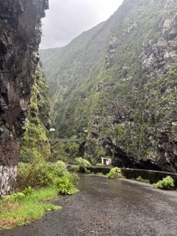
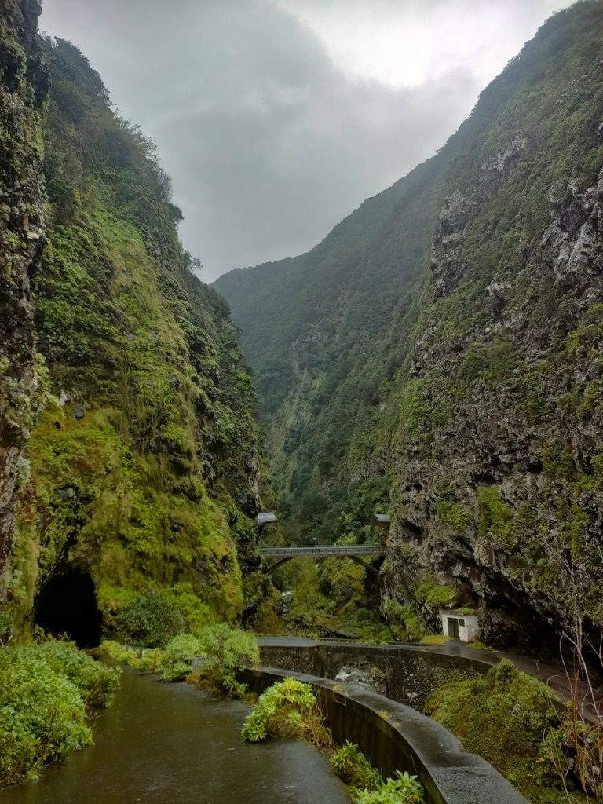
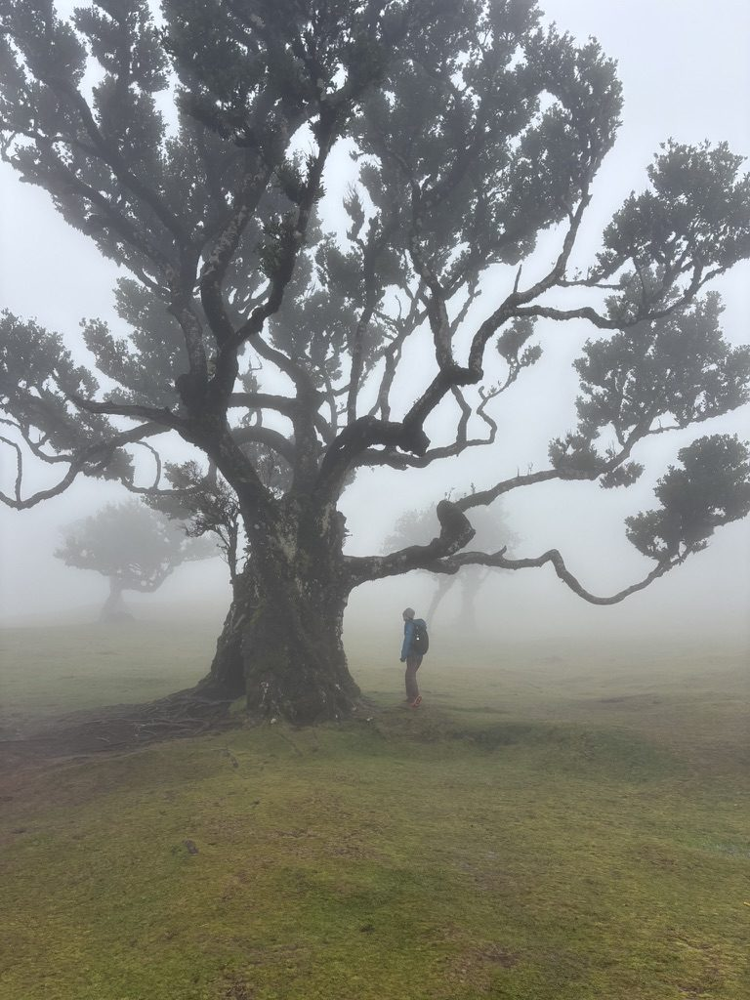
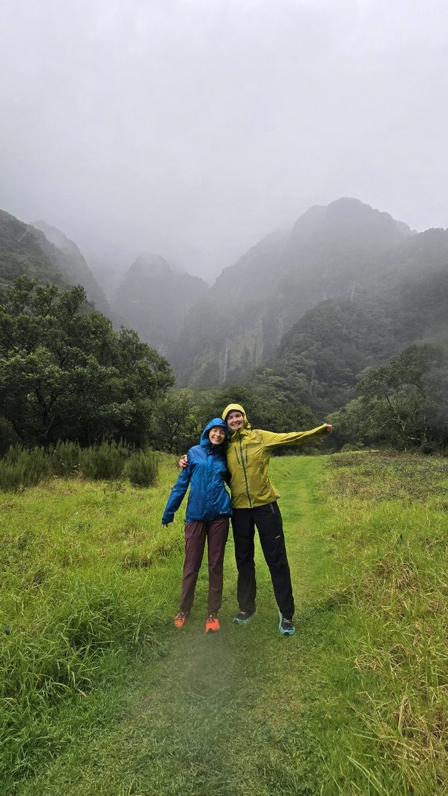
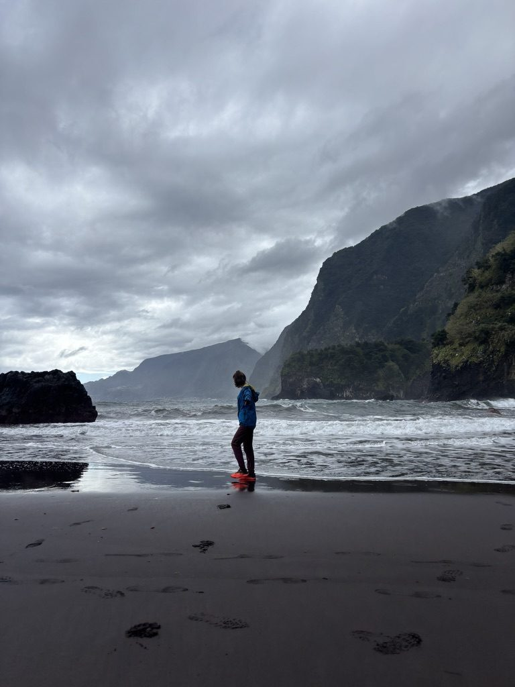
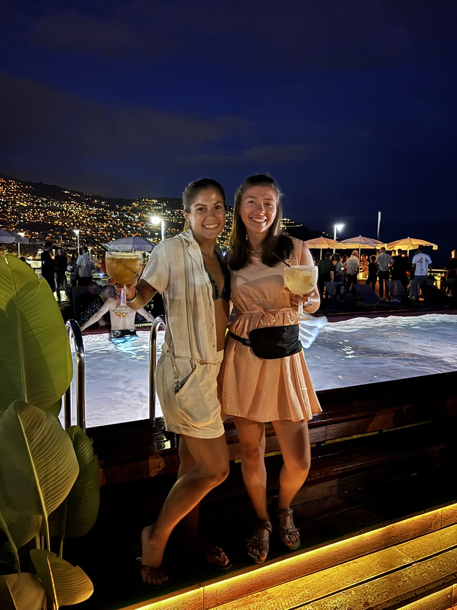

March 2025. First month of full-time remote work and travel. I chose Madeira because it was supposed to be the island of eternal spring — mild temperatures, flowers, trails open year-round. The brochure version.
What March in Madeira actually is: rain. Heavy, consistent, committed rain. The kind that closes levada trails for weeks because the paths flood and the parks service simply shuts them. I arrived with a hiking plan and watched it dissolve into the Atlantic in about four days.
This is what I learned: having a backup is not a contingency. It's the actual plan.
The cowork that changed everything

The cowork. The mural says everything about what it actually became.
When the trails are closed, you need somewhere to go with your laptop that isn't your rental apartment. I found a cowork space in Funchal with a checkered floor, hanging plants, and a mural that said "Connect Community Work." I showed up the first morning not expecting much. I stayed for a month.
The cowork became the actual centre of the trip. You sit down next to a stranger, you both have laptops, and the conversation starts. Within a week I knew an American woman who'd been travelling for six months, a guy from Scotland who had come specifically to hike, a Ukrainian endurance runner who'd be at the summit before anyone else was awake. None of this was planned. All of it was better than anything I could have planned.
What rain looks like in Madeira

The north side of the island in March. Even in rain, it's absurd.

The levada road on the north coast. You don't need a hiking trail for views like this.
Madeira in rain is not the version anyone posts. But it has its own character — the cliffs go green in a way they don't in summer, the waterfalls multiply, the gorges fill with sound. You can drive the north coast road and see things that require no trail, no permit, no advance booking. Just a car and the willingness to pull over.
Fanal: the forest that belongs to fog

Fanal. The trees are ancient. The fog makes them stranger.
Fanal is the exception to the rain rule. It's a laurissilva forest in the northwest — ancient laurel trees that have been there for hundreds of years, growing wider than they are tall, their branches spreading in shapes that have no logic. In fog, which is its natural state, it looks like a place from a story rather than a real geographic location.
The hike there was technically possible even in March. It was cold and wet. The trees didn't care. You walk among them feeling approximately the size of a child, which is the right feeling to have in a forest that old.
Hiking in the rain, anyway

We were both going to hike regardless of the rain. We found each other at the cowork.
The guy from Scotland and I ended up doing several hikes together. He had come for exactly the same reason I had — trails, mountains, the outdoor version of the island. He had also encountered the rain. The difference was he thought this was funny. His attitude adjusted mine. We hiked in waterproofs, got comprehensively wet, and laughed about it while eating something warm at the end.
The valley in this photo had a waterfall that was only that size because of the March rain. In summer it would be a trickle. We were technically seeing Madeira at its most intense.
The black sand beach alone

There was nobody else here.
One of the things rain does for you in Madeira is give you places that would otherwise be crowded entirely to yourself. The black sand beach on the north coast in March had one other person on it, briefly. Then it was just me, the waves, and the cliffs behind going up into cloud.
These are the versions of places that don't get photographed and reposted. They exist in a small window of time and weather, and you either happen to be there or you don't.
The people, in the end

The people from the cowork. We watched the sunset above Funchal. I hadn't expected any of them.

Funchal from above, at night. The cocktails were also good.
By the end of March I had a group of people I genuinely didn't want to leave. We had shared bad weather, good food, long cowork sessions, and the specific kind of conversation that happens when you're all somewhere temporary and know it. Everyone was in transit. That made everything feel lighter and more honest at the same time.
I came back to Madeira three months later, in June. The trails were all open. The weather was perfect every single day. It was everything March wasn't.
But the people I met in March were people I wouldn't have met in June, when everyone is hiking and there's less reason to sit down next to a stranger and talk. The rain gave me that. I kept it.